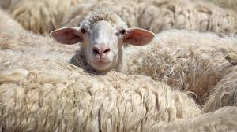

Kleine opdrachten
Mini Opdracht 1
Mini Opdracht 2
Mini Opdracht 3
Mini Opdracht 4
Mini Opdracht 5
Mini Opdracht 6a
This is the earth.
If you press the button it changes into Mars by changing the value of the src (source) attribute of an image.
Mini Opdracht 6b
These are the 4 seasons.
If you press the button it changes the season.
Mini Opdracht 7
Mini Opdracht 8

Mini Opdracht 9 NVT
Mini Opdracht 10 NVT